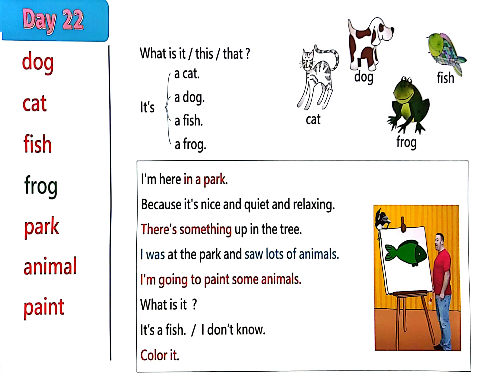

Day 22
Unit 7 · story
教材重点
教材重点依据网盘文件“第二级蓝色每日打卡全.pdf”，第 23 页对应 Day 22；保留文字整理并同时提供原图。
网盘教材重点原图 · PDF 第 23 页对应 Day 22
a dog. I t’s a cat. dog cat fish frog park animal paint a fish. What i s i t / this / that ? a frog. I ' m here i n a park. Because i t's nice and quiet and relaxing. There's something up i n the tree. I was at the park and saw l ots of animals. I ' m going to paint some animals. What i s i t ? I t’s a fish. / I don’t know. Color it. cat dog frog fish

Unit 7 · story · 4–6岁
frog · say · look · hello
Hello, hello, hello, hello, everyone. Hello.
台词本为机器转写，可能存在识别误差；不等同于视频逐字原声。
详细内容
Part 1 核心词汇
必须掌握 · 4 个Part 2 跟读句型与句型拓展
左侧保留台词本原句，右侧为替换练习；拓展内容不是视频逐字台词。
Hello, hello, hello, hello, everyone. Hello.
Everyone, hello. Hello.
Everyone say, hello. Everyone.
Dog, cat, fish and frog.
Okay, hello, again. Hi. How are you.
Part 3 台词本全文
来源：第2级台词本 · 022.Wow!Blue - Unit 7 - part 1 story_7_1.pdf。以下保留网盘 PDF 的机器转写文本，仅清理了文件路径页眉和空行。
Hello, hello, hello, hello, everyone. Hello.
Everyone, hello. Hello.
Everyone say, hello. Everyone.
Dog, cat, fish and frog.
Okay, hello, again. Hi. How are you.
I'm here in a park because it's nice and quiet and relaxing. Yeah?
Hey, what was that There's something up in the tree.
What is it What is it? Oh, look, it's a cat, hello little cat, hey, oh, and what was that.
Who look fish, oak and frogs? Wow?
That gives me an idea, so why don't you come with me Come on, let's go.
Maggie and boys and girls, maggie.
I was at the park and saw lots of animals, so I'm going to paint some animals. Now.
You try and guess what I'm painting. Hey, what's this? Oh, what is it? Oh,
What is it what I don't know, hey, look, it's a.
Fish to color it in, go look, oh, it's a fish. Hey.
Why don't you say it with me, but slowly, what is it.
It's a fish. And again,
It's a fish well done. Now let's say it fast.
It's a fish, oh, come on, what is it It's a fish, and again, it's a fish. What is it.
It's a fish, yeah, super, okay, maggie, take it away, I for the next one.
Okay, what animal am I painting? Hey, what is it.
Oh, oh, hi, what's up.
If you don't know, say, I don't know, what is it I don't know. I'll paint some more.
Here we go.
What is it.
What is it to go close, though, say I don't know, let me finish the picture here We go.
Oh,
So look what is it? Yeah, it's it. I like cats, a.
So come on, say it with me, but slowly, what is it It's, ah,
Cart and again, what is it.
/
-
/2/022.Wow!Blue - Unit 7 - part 1 story_7_1.txt[2022/3/29
星期二
6:42:41]
It's a.
Cut well done, now say it fast, what is it It's a cat what is it It's a cat And again, what is it.
It's a cat who, well done, thanks, maggie, take the cat away, I can, I'll draw some more animals, okay,
what's this?
Yeah, HA, ha, HA, hey, let's have some fun with Steve.
Time for some muggy magic.
Oh, oh, how I sorry I've nearly finished, oh,
Look, what is it.
Yeah, it's a frog. Oh, I like frogs. Color it in.
So what colour shall I paint The frog?
Ready, I think of you, green? Yeah?
A nice green frog.
Stop jumping, jumping, stop jumping. Hey Maggie, are you being naughty.
Look at the frog jumping.
Maggie, stop the frog, please, okay, paul, thank you, that's better, but look.
What a mess, green thing everywhere.
Anyway, look, what is it? Yeah, it's a frog, say it with me, but slowly, what is it.
It's a frog, and again, come on, what is it.
It's a frog, well done, now let's say it fast, it's a frog, so come on, what is it.
It's a frog, and again, what is it It's a frog, last time, what is it it's a frog? Yeah, well, done.
OK, take it away, maggie Light.
What shall I paint now? Oh, I know, hey, what's this What is it.
What am I drawing Do you know, yeah, let's see if you're right, what is it What is it.
Yeah, look, what is it.
It's a dog, that's wrong.
And thank you, maggie for not being naughty. Look at my dog, I'll just colour it in, oh wonderful.
And why don't you say with me, come on, what is it But slowly, we say.
It's a dog. What is it.
It's a dog, well done, let's say it fast, it's a dog, are you ready What is it.
It's a dog, come on, what is it It's a dog, last time, what is it.
It's a dog, yea, well, done, so.